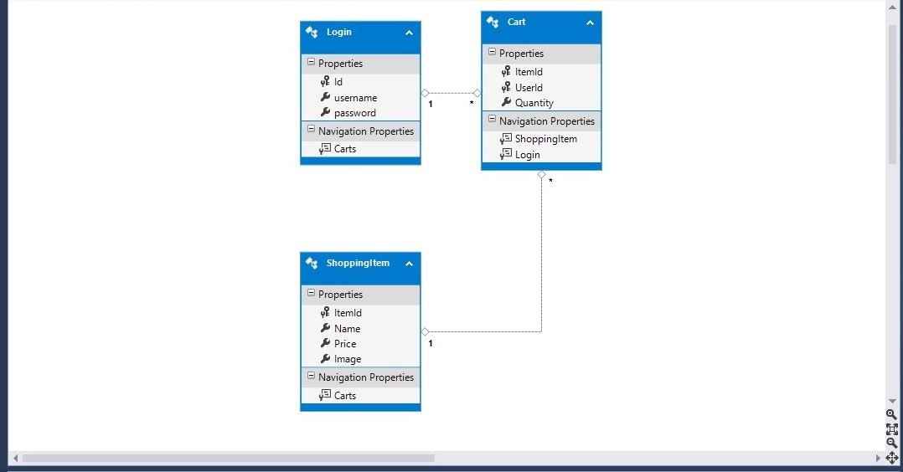

Database Design
In my database design, there was many-to-many relationship between Login and Shopping Item initially. In order to
convert this weak-weak relationship, I reified the design and introduced a table "Cart" thereby making a one-to-many
relationship.
Below is the snapshot of my database design used in the project for online shopping module:
